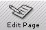

| | |
Table of Contents | Last | Next
Creating and Editing Two Way Web Sites and Pages
This section answers the following questions:
How do I Create a New Web Site?
To start, simply click on the New Site icon:
The New Site Icon
or select File > New > Web Site from the pull-down menus.
This starts the New Site Wizard:

The First Step of the New Site Wizard
Clicking the question mark after the word Two Way Website will show an informational popup providing more information:

"What is a Two Way Web Site?" Popup in the New Site Wizard
Next, choose an online name for your new Two Way Web Site:
The Second Step of the New Site Wizard
Choose a name, such as CodingInParadise, and then choose an ending. The default ending for all Two Way Web Sites is .site.
Next, choose a description and category so that your site can be listed in The Two Way Web Directory:

The Third Step of the New Site Wizard
Your site description is limited to five-hundred characters.
Fourth, choose your membership policy. Two Way Web Sites only have three roles: Managers, Members, and Non-Members. Managers can add and remove members, and can edit and delete pages. Members can create and edit pages, but can not delete them or manage other members. What Non-Members can and can't do depend on how open or closed you decide to make your site.
On the Choose Your Membership Policy step you can decide how public or private you would like your site to be:

The Fourth Step of the New Site Wizard
Now you're ready to go! Simpy give your new web site's online name to friends and family to have them start joining. Make sure they download the Paper Airplane browser before they access your site:

The Fifth Step of the New Site Wizard
After pressing the Create button a dialog window will appear as Paper Airplane tries to create your new Two Way Web Site. You can press the Cancel button at any time to stop the process.
Once Paper Airplane completes creating your site, the browser will update to show the Start page. The Start page is the first page a visitor will see when they visit your Two Way Web Site. By default the Start page simply says "Congratulations, your Two Way Web Site is ready to go! This is the Start page, which is the first page visitors will see when they visit your site. Press the Edit Page button to begin editing this page to change its contents to something cleverer and more entertaining."
Important: Make sure you have a page named Start on your Two Way Web Site. If you don't, the browser will simply display whatever page comes first alphabetically in a list of all page names. There can only be one Start page.
Note: Paper Airplane only creates Two Way Web Sites and not older World Wide Web Sites.
How do I Create a New Web Page?
To start, either press the New Page button:
The New Page Button
or select File > New > Page from the pull-down menus.
This will display the Choose a New Base Document dialog window:

Choose a New Base Document
Choose what type of document you would like your page to start as, such as a spreadsheet or a word processing document. You can always mix and match anything you wish onto your pages once you set your base document, such as adding a spreadsheet to a drawing or a drawing to a presentation.
After selecting your base document the Paper Airplane editor will appear:

Edit Mode - Word Processing Toolset
What is the Difference Between a Manager, a Member, and a Non-Member?
Managers can add and remove members, and can edit and
delete pages.
Members can create, edit, and rename pages, but can not delete them
or manage other members.
Non-Members can only view, but can not edit, a site.
Paper Airplane makes it easy for you to control how public or private you would like your Two Way Web Site to be. A Membership Policy determines whether visitors can browse your site and how easy or hard it is for visitors to become members. There are four membership policies available in Paper Airplane:
You choose a membership policy when you first create a Two Way Web Site with the New Site Wizard. The policy can be changed at a later time as well by choosing the File pull-down menu and selecting About this Site..., and then choosing a new membership policy from the About this Site... dialog window.
What is a Super Public Web Site?
A Super-Public web site is a Two Way Web Site where anyone who comes to your site will automatically become a Manager. This means that everyone who visits your site can change, edit, and delete everything without authorization from you. No approval of new members is needed by a Manager.
This kind of Two Way Web Site is appropriate for experimental, egalitarian communities where fluid boundaries are appropriate.
A Public web site is a Two Way Web Site which anyone can freely visit and view. If they wish to join and become a Member of the site, which means they will be able to change and edit pages, they must press the Join this Site button on the Tool Bar. They will instantly become a Member of the site, and can freely edit and create pages. No approval of new members is needed by a Manager.
This kind of Two Way Web Site is appropriate for open and non-private communities where a majority of the members co-create the web-site, with a few Managers in an administrative role.
What is a Restricted Public Web Site?
A Restricted Public web site is a Two Way Web Site which anyone can freely visit and view. If they press the Join this Site button in the Tool Bar then they do not become instant members. Instead, they remain non-members, and a manager must approve their membership. After being approved by a Manager they become full-fledged Members, and can edit and create pages.
This kind of Two Way Web Site is appropriate for online communities where a majority of the people visiting are non-members looking for information, while a few Members and Managers create the content, such as for an online news magazine.
A Private web site is a Two Way Web Site that does not allow casual visitors; no non-members are allowed. Only Members pre-added by a Manager can visit or edit content in these Two Way Web Sites.
This kind of Two Way Web Site is appropriate for private and/or sensitive online communities. Amongst the members it is a very open, co-created space, but is completely invisible to the outside Two Way Web.
If you enter the address for a Private Two Way Web Site that you are not a member of a dialog window will appear informing you that this community is private; no pages will be loaded into the browser from this site and you will remain at the page you were at before.
How do I Create a Spreadsheet, Presentation, Graphic, Image, or Word Processing Document?
To create a new page that is a spreadsheet, presentation, etc., first press the New Page button:
The New Page Button
The Choose a New Base Document dialog will appear:
Choose a New Base Document Dialog
By choosing a base document you determine what editing tools to begin with. For example, if you select a Graphics base document then the Paper Airplane editor will show tools for working with graphics; if you select a Spreadsheet base document, then you will see tools for working with spreadsheets.
No matter what type of base document you choose, you can always mix and match items on your page later. For example, even if you start with a graphics base document, you can place a spreadsheet or word processing area into your page later on. The editor will update to show the tools appropriate to what you are working with on your page.
How do I Edit the Page I am Currently Browsing?
First, press the Edit Page button on the tool bar; if you are not a Member or a Manager of the current Two Way Web Site then this button will be disabled:

The Edit Page Button
A new window will open with the Paper Airplane editor showing the current page ready to be edited.
Important: More than one person could be editing the page at the same time you are. When you edit a Two Way Web Page it is not "locked" or "checked-out"; others can also edit the same page. Your changes could potentially disappear if another member begins editing the page before your changes are saved.
How do I Save My Page to a Two Way Web Site After I have Edited It?
In the Paper Airplane editor simply select the File pull-down menu and then choose Save, or press Cntrl-S. A dialog window will appear as Paper Airplane attempts to save the page into the Two Way Web Site.
To save a page to a different location in the Two Way Web Site or to a different Two Way Web Site, select File > Save As.... A standard File/Save As... dialog window will appear:
File/Save As... in a Two Way Web Site
Paper Airplane automatically creates folders on your hard-drive for each of the Two Way Web Sites you are a member of with all of the pages on that site; if you save to these folders then the page will appear on that particular Two Way Web Site. By default the File/Save As... dialog will be in the folder for the Two Way Web Site you are currently in. To choose a different Two Way Web Site, first press the My Network Places button in the dialog:
My Network Places Icon Circled
and select My Web Sites in the Two Way Web:
File/Save As... at Top-Level of My Network Places
My Web Sites on the Two Way Web Icon
You will now see a list of all the Two Way Web Sites you are a member of. Select one of them to save into that web-site; in the example below we choose the Two Way Web Site www.acme.company and then save our page there:
File/Save As... For Sites You Are a Member Of
File/Save As... for www.acme.company
You must be connected to the Two Way Web and the Internet to save your work to a Two Way Web Site; otherwise you will need to save your work to your hard-drive and upload it later when you are online.
Important: More than one person could be editing the page at the same time you are. When you edit a Two Way Web Page it is not "locked" or "checked-out"; others can also edit the same page. Your changes could potentially disappear if another member begins editing the page before your changes are saved.
Note: You can not save your web pages to older World Wide Web Sites using Paper Airplane. Paper Airplane is focused on providing the tools needed to create, maintain, and share content for Two Way Web Sites only.
How do I Abandon Any Changes I Have Made?
To cancel and abandon any changes you have made while editing a Two Way Web Page, simply click the X icon on the upper-right corner of the Paper Airplane editor. A dialog will appear confirming that you wish to close the window without saving your page. Simply press the OK button to abandon any editing changes you have made. Note, however, that if you have saved changes in the interim then these changes will be recorded on the Two Way Web Site; there is no way to recover a page that you have saved over with new changes.
How do I Work on a Page Without Being Online?
To work on a page while not being online, simply press the Edit Page button at the page you would like to work on and disconnect from the Internet. Alternatively, you can choose File > Save As.. from within the Paper Airplane browser, save the page to your local hard-drive, and load the page into the Paper Airplane browser afterr you have disconnected. By default saved web-pages will appear in your My Documents folder with the file-extension page. For example, if you save a page named Doing Business in Bangkok to your hard-drive it will have the file-name Doing Business in Bangkok.page.
To upload a page after you have returned online, simply select File > Upload...from the Paper Airplane browser and find the page saved on your hard-drive using the file browser dialog. Paper Airplane will display a dialog box as it attempts to upload this page to the current Two Way Web Site you are browsing. The page will be named the same as the file-name, but without the page extension. Select File > Rename to rename the file after uploading.
How do I Upload a File to a Two Way Web Site?
Two Way Web Sites can hold more than just Two Way Web pages, which have the file-extension page. You can upload MP3 files, images, Microsoft Word files, and more. Anything you can store on your hard-drive can be stored on a Two Way Web Site.
To upload a page, simply select File > Upload...from the Paper Airplane browser and find the file on your hard-drive using the file browser dialog. Paper Airplane will display a dialog box as it attempts to upload this file to the current Two Way Web Site you are browsing. If the file is a page with the page extension, such as Doing Business in Bangkok.page, then it will be named the same as the file-name, but without the page extension.
[insert denial of service solution for uploaded large files here after architecture is finished]
Where Can I Learn How to Use the Paper Airplane Editor?
Consult the gobeProductive online manual at [insert hyperlink here].
What is the Start Page? How do I Change the Page Users First See When They Visit My Site?
The Start page is the first page a visitor will see when they visit your Two Way Web Site. For example, if someone enters www.codinginparadise.weblog, into the Address Bar in their Paper Airplane browser, then they will see www.codinginparadise.weblog/Start.
To change the page users first see when they visit your site, first navigate to the existing Start page in your browser by clicking on your site's name in the Page Info Bar:
Site Name Circled in Page Info Bar
This will show the existing Start page for your site. Select File > Rename and change the page's name to something other than Start, such as To Do List. Now navigate to the new page you would like to have as your Start page and select File > Rename again. Enter the new name Start. User's will now see this page when they enter your web sites name.
Important: Make sure you have a page named Start on your Two Way Web Site. If you don't, the browser will simply display whatever page comes first alphabetically in a list of all page names. There can only be one Start page.
Can I Create Folders on my Two Way Web Site?
Two Way Web Sites are 'flat' and can not have folders. The primary reason for this was the confusion created over how AutoLinking and folders interact. For example, if I have a page named Doing Business in Bangkok in both the folder Bangkok and the folder South-East Asia, what should happen if a user types [[Doing Business in Bangkok?]] to perform AutoLinking? Other issues were having to set a Start page for each folder.
How do I Configure the Paper Airplane Editor?
To configure the Paper Airplane editor see the section Changing Editing Settings.